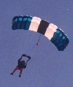
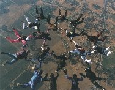
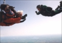
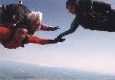
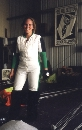

I've been skydiving since May 1997. I learned to jump at J.T. Willie Airport (aka The Farm) in Worthington, PA, and Cleveland Sport Parachute Center in Parkman, OH. My first jump was a static-line jump from a Cessna at 3200 feet. I had gone through a six-hour training session the week before, but I couldn't jump the day of the training because of the weather: 51-mph winds, rain, hail, lightning... The instructors had to shout to be heard over the noise of hailstones on the metal hangar roof! So I had a week to think about it and get nervous. But when the weather cleared up, I jumped... and once I'd tried it, I was hooked. Recently I've been working toward my static-line JM rating, so I can help other poor suckers, err, students get hooked on this too.
Usually I jump at the Parachute Center in Lodi, CA. Now'n'then I visit Bay Area Skydiving in Byron, and Skydive Monterey Bay.
Some unusual jumps:
Random Numbers:
|  |
| Photos: | |
|  |
10 October 1999, at Lodi. After the KDFC 6-way Scrambles competition, both teams, the organizers, judges, cameraman, etc. got together for an 18-way. [Photo by Fast Eddie] |
|   |
Docking on my brother Dave, during his tandem jump at Lodi, March 1999. [TM: Mike Spurgeon. Photo by Fast Eddie] |
|  | In the hangar at Byron |
I'm always looking to learn new juggling tricks. I learned to juggle clubs in April '97. The IJA 50th anniversary festival (August 1997) was very helpful. I only went for two days, but you can learn a lot in two days of non-stop juggling!
Stuff I can do:
Stuff I'm working on:
How To:
[io.com]
[Juggling For The Complete Klutz]
Supplies, books, etc.:
[Brian Dube Inc.]
[Renegade Juggling]
[Advice on buying clubs]
Miscellaneous:
[Int'l Jugglers Assoc.]
[IJA 50th Anniversary Festival]
Jugglers Against Gravity (Strange But True - Juggling Accidents)
When I finish the current cross-stitch project I might try making another quilt. The first one, a 25th anniversary gift for my parents, took almost five years, working on-and-off. Important safety tip: for your very first quilt, do something small. Don't try to fit a California king size bed (bigger than standard king size)!
I learned to crochet a few months back and have been working on small projects, like baby blankets for friends' kids.
Memorable trips:
January 1997: a week in Maui. Walking through a dim green bamboo forest, then breaking through into the sunlight and a magnificent view of a huge waterfall... skidding down a hillside of lava chunks in a volcano crater at 10,000 feet... picking my way across a crazily eroded landscape of sharp rocks to a cove with a hidden blowhole... camping by the edge of a cliff where fist-size crabs scamper around the rocks below and the waves crash furiously all night...
October 1997: a week in Banff. Okay, so most of it was spent at a
conference, but only most of it. I saw a black bear (on the
opposite side of a river), a wolf, many elk, magpies...
PHOTOS
June 1998: up & down the East Peak of Mt. Tamalpais, via the Indian Fire Road and Eldridge Grade.
October 1999: a day hike up & down Mt. Tallac (near Lake Tahoe) turned into an all-night adventure, including a few hours huddled in a "nest" in the bushes, soaking wet, trying to find a comfortable way to sleep on the branches without getting speared. I don't recommend descending the north side of the mountain during warm weather!
Ari Rapkin Last modified: Mon Jul 20 17:40:11 PDT 1998
{kind=link}
{kind=link}
{kind=link}
{kind=link}
{kind=link}
{kind=link}
{kind=link}